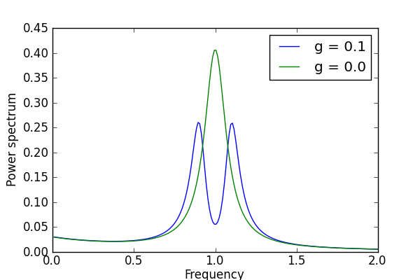

The spectrum of a cavity coupled to a two-level atom¶
Calculate the power spectrum of a cavity, with and without coupling to a two-level atom.
from qutip import *
from pylab import *
def calc_spectrum(N, wc, wa, g, kappa, gamma, wlist):
# Hamiltonian
a = tensor(destroy(N), qeye(2))
sm = tensor(qeye(N), destroy(2))
H = wc * a.dag() * a + wa * sm.dag() * sm + g * (a.dag() * sm + a * sm.dag())
# collapse operators
c_op_list = []
n_th_a = 0.1
rate = kappa * (1 + n_th_a)
if rate > 0.0:
c_op_list.append(sqrt(rate) * a)
rate = kappa * n_th_a
if rate > 0.0:
c_op_list.append(sqrt(rate) * a.dag())
rate = gamma
if rate > 0.0:
c_op_list.append(sqrt(rate) * sm)
# calculate the spectrum
x = a.dag() + a
return spectrum_ss(H, wlist, c_op_list, x, x)
#
# setup the calcualtion
#
N = 10 # number of cavity fock states
wc = 1.00 * 2 * pi # cavity frequency
wa = 1.00 * 2 * pi # atom frequency
g = 0.10 * 2 * pi # coupling strength
kappa = 1.0 # cavity dissipation rate
gamma = 0.2 # atom dissipation rate
wlist = linspace(0, 2*pi*2, 200)
spec1 = calc_spectrum(N, wc, wa, g, kappa, gamma, wlist)
spec2 = calc_spectrum(N, wc, wa, 0, kappa, gamma, wlist)
fig=figure(figsize=(6,4))
plot(wlist/(2*pi),real(spec1), wlist/(2*pi), real(spec2))
xlabel('Frequency')
ylabel('Power spectrum')
legend(("g = 0.1", "g = 0.0"))
savefig('examples-spectrumsteady.png')
close(fig)
